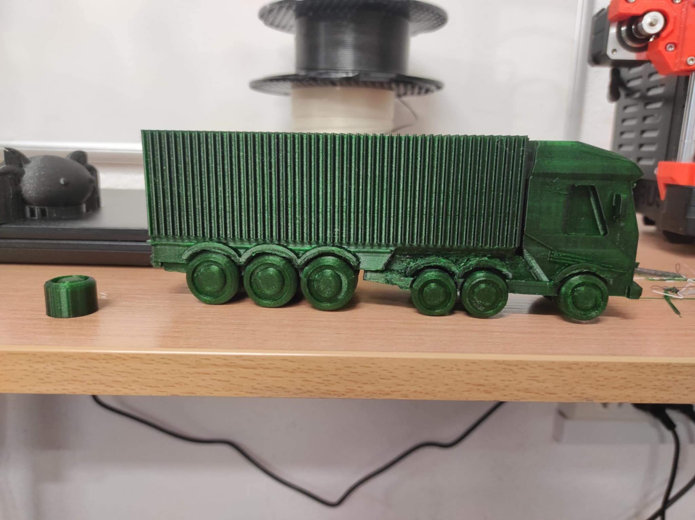

Tu znajdziesz projekty graficzne 3D przygotowane z myślą o druku lub wizualizacji.
Projekt 3D TIR
Poniżej znajduje się pełna wizualizacja koncepcji graficznej dla modelu TIR – przygotowanej pod druk, prezentację oraz portfolio.
Opis obrazu tir_2.jpgOpis obrazu tir_3.jpgOpis obrazu tir_4.jpgOpis obrazu tir_5.jpgOpis obrazu tir_6.jpgOpis obrazu tir_7.jpgOpis obrazu tir_8.jpgOpis obrazu tir_12.jpgOpis obrazu tir_13.jpgOpis obrazu tir_9.jpgOpis obrazu tir_10.jpgOpis obrazu tir_11.jpg